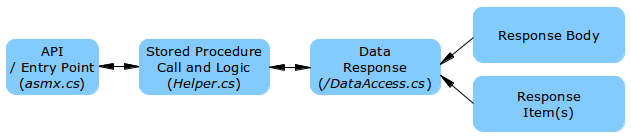
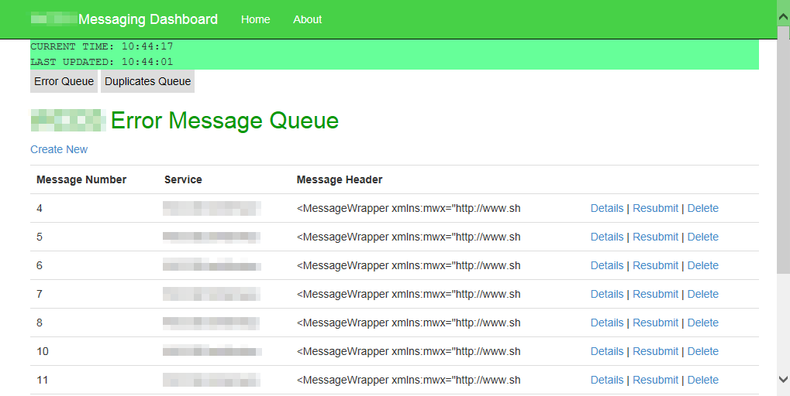
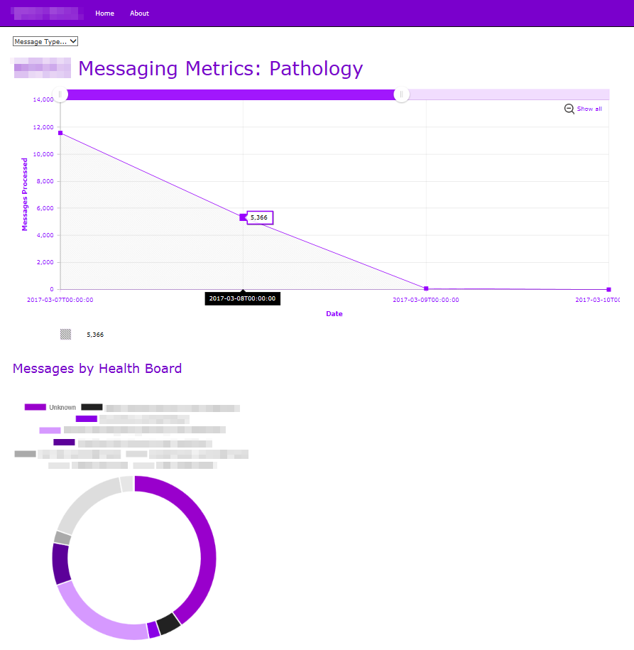

Test Automation
Using Microsoft's Coded UI Test libraries and a little knowledge of C#, I was able to deliver a test automation capability to a large healthcare software provider. Regression tests that previously required several weeks' manual work could be completed within a few hours. As it's not always possible to perfectly replicate user actions and get the same level of test coverage, automation was mainly used for testing the core functionality of applications.
Advantages:
- Best used for automating regression tests against core features of an application, to avoid duplication of manual testing efforts.
Disadvantages:
- Automated tests aren't adaptable. If there are intended changes to the application under test, the test scripts should be modified to reflect those changes.
- The above point also means the creators and maintainers of the automation scripts would need some familiarity with the scripting language.
- Automation scripts must be created for each feature added during a development iteration, which requires performing regression tests manually anyway.
We also managed to use Test Manager so recordings of manual regression tests could be converted to C# code and modified as required.
Web Services
Used for passing of data between several nationally-deployed clinical systems. The Web Service architecture followed the SOLID principles of software design, being loosely coupled across five layers:
- API repository
- Web Service helpers
- Data access: Data response
- Data access: Data response body
- Data access: Data response items

The API repository is a .asmx file containing all the entry points for our collection of Web services. Requests are passed to the relevant Web Service helpers, which are coded in C# to perform whatever operations. The data access layer for a typical Web Service is broken down into three sub-components that collectively form a response populated by data objects.
Testing and debugging was performed using SoapUI.
Messaging Dashboard
Uses:
- ASP.NET MVC 5
- Entity Framework
- Service Broker and Stored Procedures

The Messaging Dashboard interprets and displays the contents of Service Broker's error and duplicate message queues, enabling the system administrators to more quickly determine the cause of message processing failures. Selected messages could be deleted, resubmitted or moved between Service Broker queues.
Messaging Metrics Dashboard
This ASP.NET MVC 5 application displays graphs showing the number of messages processed by a) Total Message Volume, b) Messages by Organisation, and c) Messages by Type.

The application works from an Entity Framework model that includes the stored procedures and data objects sent/returned. The stored procedures are called by Web API controllers that return JSON responses to the View layer. In the View layer, JavaScript charts are rendered from the JSON response data.
Uses:
- ASP.NET MVC 5
- Entity Framework
- amCharts and Chart.js
Development notes here...